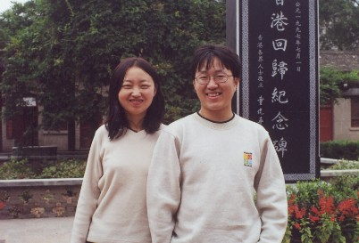
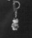
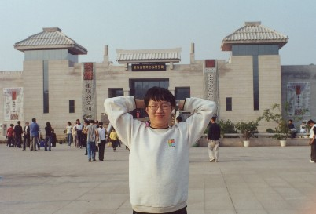
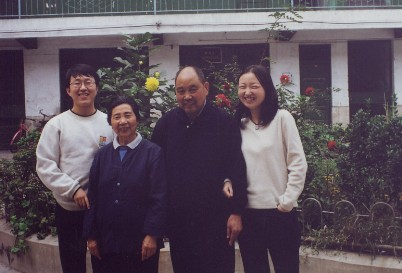
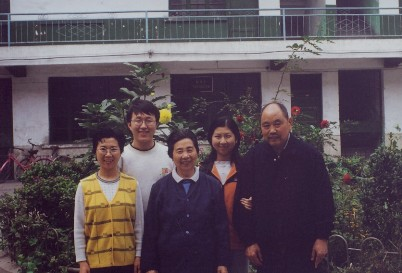

Wangjianshuo's blog
Events (in Shanghai) that affect my life (and others')
Home |
Directory |
Photo |
Map |
Random | About me
Old City, Old Xi'an
Fan Fan and I visited Xi'an in October 2000. This is the first time we travel
together after I graduate. We flied from Shanghai to Xi'an. One of the other
proposal of this trip is to see my uncle. then directly go to Tong Chuan where my
uncle lives.During the trip, we also enjoyed the food of Xi'an. It is so
wonderful and cheap. The food of Xi'an become the most attraction factor for us
to go back to Xi'an again.
Here are some photos we took in Xi'an and surrounding areas.

Fan Fan and I at Huang Ling (the tomb of Empire Huang, the very first ancestor
of Chinese people). Everyone says Fan Fan loves to smile. I didn't really notice
it until I look through all the photos and found she smiles on most photos. She
smiles even more frequently when there is no camera pointing to her. We will
certain remember this period of time when we can travel with each other freely.

Cool Fan Fan before Bing Ma Yong of Xi'an. The TechEd bag is the gift I got for
presenting BizTalk on TechEd 2000. You may notice there is a very lovely
policeman attached to the bag -- I bought this as a gift for her at the Hong
Qiao Airport. I always feel sweet then I saw Fan Fan always keeps everything I
gave her. :-)

It is me, at the same place Fan Fan stood. I began to become fatter and fatter
at that time. Now I believe I am fat enough and will not be fatter. :-(
Fan Fan and Yuan Yuan before the Big Yan Tower, the symbolic building for Xi'an.
Yuan Yuan acted as a professional guide during our stay.

We visited my uncle. This photo is taken before the hospital they once worked.
When I was one and half years old, I live with them in Tong Chun. I returned to
Luoyang after one year. I love them so much. I will visit them at least every
other year.

This is the whole family with my elder sister (left) and Yuan Yuan (second from
right).
More Information
© Copyright 2002 Jian Shuo Wang. All right reserved.